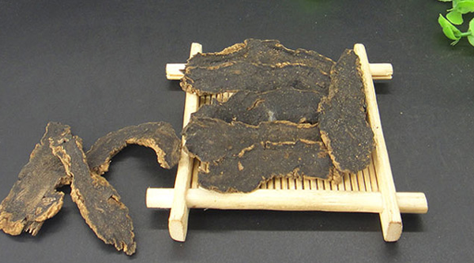
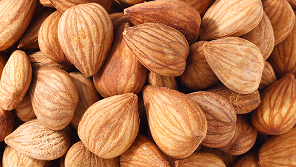
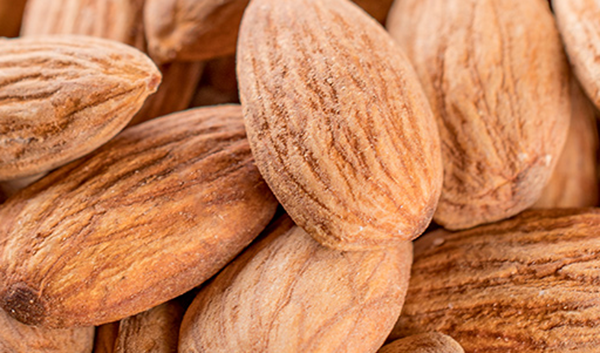
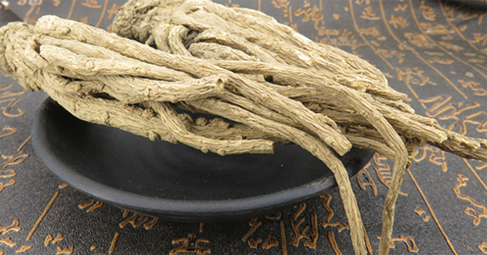
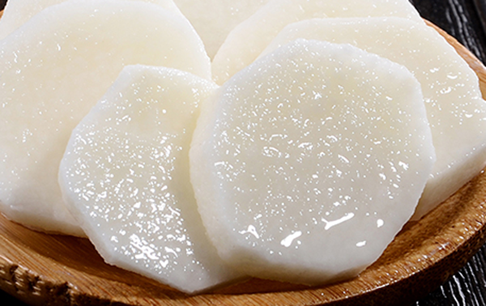

原文连接:https://www.daquan.com/post/12467.html
黄芪主要和玄参、南杏仁、杏仁这三样不能一起吃的，因为和这三样一起吃会引起人身体上的一些不适。黄芪是非常好的滋补药材但也不是所有人都适合用黄芪滋补的，像阴虚火旺的还有本身就是肝火旺盛的以及被邪气入侵的患者不适合吃黄芪。黄芪和金银花、山药、当归在一起吃效果更好。
黄芪不能一起吃的
1、玄参

玄参性寒，有着清热凉血的作用，可以滋阴、解毒、降火。玄参是不能和黄芪一起使用的，因为黄芪是滋补的药材，多数使用黄芪来滋补身体的人都是脾胃较差的。玄参性味凉，脾胃不好的人使用玄参会出现呕吐、腹泻、肠胃不适，并且研究表示黄芪和玄参同用会导致身体不适，因为他们的功能是相克的。
2、南杏仁

南杏仁是甜杏仁有着止咳的作用，研究发现南杏仁和黄芪一起使用会导致一定的身体不适。南杏仁单独使用可以治疗咳嗽，并且无毒，是治疗咳嗽非常好的药，黄芪是滋补补气的好药材。它们分开使用都有着很好的功效，但是一起使用会导致身体不适。
3、杏仁

杏仁又叫苦杏仁，和甜杏仁最大的区别就是苦杏仁有着一定的毒性，每次使用苦杏仁入药时不能超过6颗的剂量。杏仁本身就有一定的毒性，使用药物过量很容易到时身体的不适，苦杏仁和黄芪同用会引起身体的不适。黄芪不适合和各种种类的杏仁同用。
黄芪不适合使用的人群
1、阴虚火旺
黄芪不适合阴虚火旺的人使用，这是因为阴虚火旺的人本身就有虚火的症状，有着口干咽痒、脸颊潮红、头晕耳鸣，阴虚火旺的人如果使用黄芪会加重火气上炎，导致火烧阴津更甚，加重阴虚症状。阴虚火旺多是因为肝肾不足导致的，所以要滋补肝肾。
2、肝火旺盛

肝火旺盛的人不适合使用黄芪泡水，这是因为肝火旺盛是实火，有着严重的上火症状，像口腔溃疡、目赤眼干。肝火旺盛的人饮用黄芪水会导致上火更严重，这是因为黄芪是温补的药材，是有着会引起上火的副作用，所以肝火旺盛的患者是不能饮用黄芪泡水的。
3、外感病邪
外感病邪的患者不宜食用补益药，补益药给外感病邪的人使用，就像给病邪打了兴奋剂一般，病邪更加厉害，疾病会更严重。常见的外感病邪主要有风热感冒、流行性腮腺炎、水痘等。
4、月经期间以及怀孕的女性

月经期间和怀孕的女性不应该和黄芪泡水，黄芪泡水是补气药，对月经和胎儿有很大的影响，所以月经期间不适合随意使用药物滋补。
黄芪怎么使用效果好
1、 黄芪和金银花
黄芪和金银花一起使用，金银花能够下火，能够缓解黄芪的温性，预防黄芪引起的上火。
2、 黄芪和当归

黄芪和当归一起使用气血双补，黄芪是补气药，当归是补血药，两个药物一起使用气血双补。
3、 黄芪和山药

脾胃虚寒的人大多都气虚，用黄芪和山药一起使用有着健脾护胃的作用。黄芪和山药同用对脾胃虚寒的人效果好。
结语：通过上文的介绍，相信的大家都了解了关于黄芪不能和什么一起吃，以及黄芪正确使用方法有哪些。希望大家在平时注意一下黄芪在使用时不要和相克的药物同用。